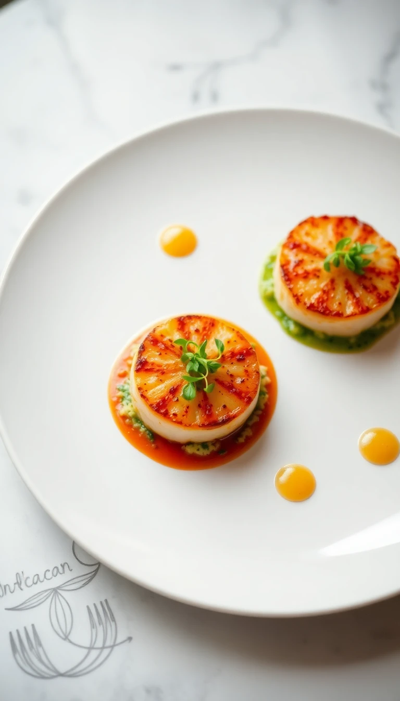

Recetas Exclusivas
Risotto de Champiñones Portobello y Trufa
Un clásico italiano elevado a la categoría gourmet con la intensidad de los champiñones Portobello y el aroma inconfundible del aceite de trufa.
Ingredientes:
- 300g Arroz Arborio o Carnaroli
- 200g Champiñones Portobello, laminados
- 1 Cebolla pequeña, picada fina
- 2 Dientes de ajo, picados finos
- 100ml Vino blanco seco
- 1 Litro de caldo de verduras caliente
- 50g Mantequilla fría, en dados
- 50g Queso Parmesano Reggiano, rallado
- Aceite de oliva virgen extra
- Aceite de trufa blanca o negra
- Sal y pimienta negra recién molida
- Perejil fresco picado (opcional, para decorar)
Preparación (resumen): Sofreír cebolla y ajo. Añadir champiñones y luego el arroz. Nacrar el arroz, añadir vino blanco y evaporar. Incorporar caldo caliente poco a poco sin dejar de remover. Al final, mantecar con mantequilla y parmesano. Terminar con aceite de trufa y pimienta.
Salmón Glaseado con Miel y Mostaza Antigua

Una receta sencilla pero elegante, donde el salmón se cocina a la perfección con un glaseado agridulce que carameliza en el horno.
Ingredientes:
- 4 Lomos de salmón fresco (aprox. 180g cada uno)
- 2 Cucharadas de miel líquida
- 2 Cucharadas de mostaza de Dijon o antigua
- 1 Cucharada de salsa de soja baja en sodio
- 1 Diente de ajo, muy picado o rallado
- 1 Cucharada de aceite de oliva
- Zumo de medio limón
- Sal y pimienta al gusto
- Eneldo fresco picado (opcional, para decorar)
Preparación (resumen): Mezclar miel, mostaza, salsa de soja, ajo, aceite y zumo de limón. Salpimentar el salmón. Colocar en una bandeja de horno, verter el glaseado por encima. Hornear a 200°C durante 12-15 minutos, o hasta que esté cocido y el glaseado burbujeante.
Coq au Vin Clásico
Un estofado francés rústico y elegante, donde el pollo se cocina lentamente en vino tinto con champiñones, cebollitas y panceta.
Ingredientes:
- 1 Pollo de corral troceado (aprox. 1.5kg)
- 150g Panceta o bacon ahumado, en dados
- 200g Champiñones pequeños, enteros o partidos por la mitad
- 12-15 Cebollitas francesas (perla), peladas
- 2 Zanahorias, en rodajas
- 2 Dientes de ajo, picados
- 1 Botella de vino tinto Borgoña (o similar, como Pinot Noir)
- 500ml Caldo de pollo
- 2 Cucharadas de harina
- 2 Cucharadas de mantequilla
- 1 Cucharada de aceite de oliva
- 1 Bouquet garni (tomillo, laurel, perejil)
- Sal y pimienta negra recién molida
- Perejil fresco picado (para decorar)
Preparación (resumen): Dorar panceta, retirar. Sellar pollo en la grasa de la panceta, retirar. Sofreír verduras. Añadir harina, luego vino y caldo. Incorporar pollo, panceta y bouquet garni. Cocinar a fuego lento 1.5-2h. Saltear champiñones y cebollitas en mantequilla y añadir al final. Servir caliente con perejil.
Paella Valenciana Tradicional
El plato estrella de la gastronomía española, un arroz lleno de sabor con pollo, conejo, judías verdes y garrofó, aromatizado con azafrán y romero.
Ingredientes (para 4-6 personas):
- 400g Arroz Bomba
- 500g Pollo troceado
- 300g Conejo troceado
- 200g Judías verdes planas (bajoqueta), troceadas
- 150g Garrofó fresco o congelado
- 1 Tomate maduro grande, rallado
- 1 Pimiento rojo (opcional, para sofrito o decorar)
- Aceite de oliva virgen extra
- Hebras de azafrán
- Pimentón dulce
- 1 Ramita de romero fresco
- Agua (aprox. 2.5 a 3 veces el volumen del arroz)
- Sal
Preparación (resumen): Sofreír carnes en paellera con aceite. Añadir verduras y sofreír. Incorporar tomate rallado y pimentón. Añadir agua y azafrán, cocer 20-30 min. Probar de sal. Echar el arroz en cruz, repartir y cocer a fuego fuerte 8-10 min, luego medio/bajo 8-10 min más hasta que el arroz esté seco y forme socarrat. Añadir romero al final. Dejar reposar 5 min tapada.
Tiramisú Clásico Italiano
Un postre italiano icónico, cremoso y delicioso, con capas de bizcochos de soletilla bañados en café y una suave crema de mascarpone y huevo.
Ingredientes:
- 500g Queso Mascarpone
- 4 Huevos grandes (yemas separadas de claras)
- 100g Azúcar glas (y un poco más para las claras)
- 300ml Café espresso fuerte, enfriado
- 40ml Amaretto o Marsala (opcional)
- Aprox. 24-30 Bizcochos de soletilla (Savoiardi)
- Cacao en polvo amargo, para espolvorear
- Una pizca de sal
Preparación (resumen): Batir yemas con azúcar hasta obtener una crema pálida. Incorporar mascarpone. Montar claras a punto de nieve con una pizca de sal y un poco de azúcar. Incorporar claras a la mezcla de mascarpone con movimientos envolventes. Mezclar café con licor (si se usa). Mojar rápidamente los bizcochos en el café y formar una capa en un molde. Cubrir con la mitad de la crema de mascarpone. Repetir con otra capa de bizcochos y crema. Refrigerar al menos 4 horas (idealmente toda la noche). Antes de servir, espolvorear generosamente con cacao en polvo.